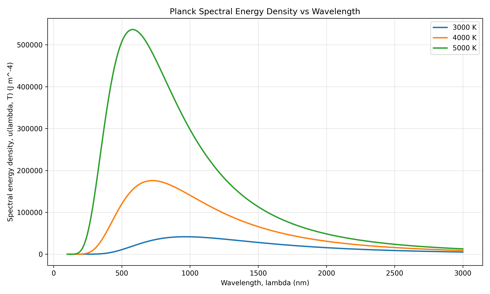

Planck Spectral Energy Density
The plot shows Planck's spectral energy density for 3000 K, 4000 K, and 5000 K from 100 nm to 3000 nm. As temperature increases, the peak becomes higher and shifts toward shorter wavelengths.

The plot shows Planck's spectral energy density for 3000 K, 4000 K, and 5000 K from 100 nm to 3000 nm. As temperature increases, the peak becomes higher and shifts toward shorter wavelengths.
